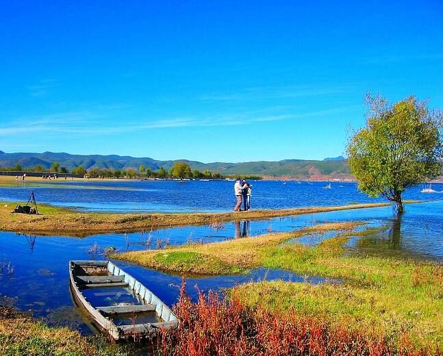
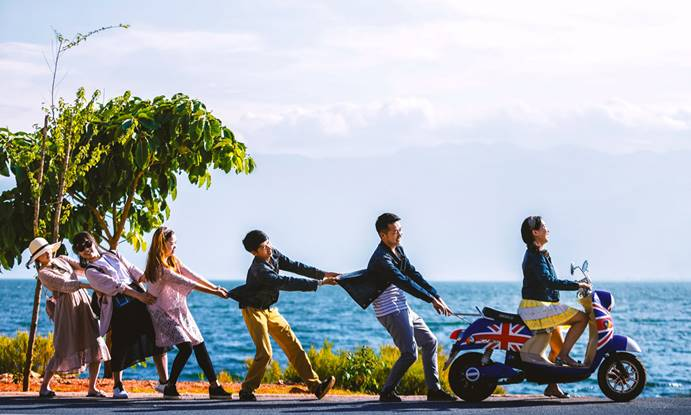

识别二维码
免费测算旅行
天 晚
注：测算结果将通过短信发送给您
开始测算
准备去云南玩6天，行程路线要怎样安排？有哪些好玩的景点？有没有云南当地导游麻烦给推荐一下，谢谢！
最近几天打算去云南游玩，但是苦于对城市不熟，网上攻略大多也就大同小异给点景点推荐。希望云南当地的朋友可以帮我制定一条详细线路，住什么地方交通比较方便啊，有哪些是值得一去的地方呀，求各位去过的人支支招，谢谢大家了！
76277浏览 · 14回答 · 42评论
广州市
李铁

夏妍
LV.24
上星期刚从那边回来，说到云南，我算是很有发言权了，前后和不同的人去过三次云南，每次的感受都是不同的，分享给你：
第一次：爸妈带我去，在昆明当地组的团，价格很高，但行程也太赶很累，导游还带着我们进了几个购物店，真心玩不好！
第二次：和闺蜜一起自己去玩，很自由，但很麻烦，要自己提前订房订票，找车，做攻略什么的，花的时间和费用过大，去了丽江山下包个车让师傅给坑了，如果楼主想自由行，切记一定要找人提前把什么都安排好，抵达云南后就能开开心心的玩就好了，不然太麻烦了。
第三次：五一去的，也是玩的最开心的一次，还有花的费用比自己过去要少很多，我们是自己订好往返机票，提前联系了云南当地导游珍珍，当时是珍珍给我们安排的6天行程，抵达云南之前就帮我们把住宿、导游、门票、交通等都安排好了，还亲自到机场接我们，超级棒！很省心很划算，最主要是省了不少麻烦，到云南后只要开心游玩景点就OK了！
评论7 1小时前
回复 1  易爱新 LV.21
易爱新 LV.21
易爱新 LV.21 刚好我也想去玩6天，能把你第三次去云南的行程说一下吗？然后还有大概费用是多少？谢谢了！
回复 2 夏妍 LV.24
夏妍 LV.24 客气了，这里我就大概说一下我们游玩的路线吧：
第一天：接机入住酒店;
第二天：石林，晚餐野生菌火锅，入住楚雄;
第三天：大理，吉普车环洱海，古城洋人街，晚餐土巴碗，住大理;
第四天：丽江，冰川大索道，丽水金沙表演,晚餐纳西喜宴，住丽江;
第五天：拉市海，束河古镇，晚火车回昆明
第六天：云南最大的鲜花市场，送机结束开心旅程,返程回家
个人觉得这个6天行程确实不错，全程游玩很轻松，也没有任何强制性消费，导游很负责任，所以全程玩的非常开心，珍珍不但做事认真负责，而且总是很有耐心的解答我提出的各种问题，只要你去云南旅游，不论玩5天还是10天，珍珍都可以根据你的时间和兴趣景点安排一份适合你游玩的行程路线，去云南旅游找珍珍绝不会错，珍珍微信： 19969156090(点击复制)
回复 3 吴洋 LV.34
你是我关注的那个夏妍吗？哈哈，这里也能遇到你！
另外能把珍珍的微信二维码分享一下吗？谢谢！刚刚微信号没加上，留着微信下次再去云南的话找珍珍给我安排。
我当时在网上找的另外一家旅行社报的名，也是玩的6天，大概行程差不多，但是我们没有吉普车环游洱海和花海这两个项目，看来珍珍安排的行程确实很有特色。
回复 4 夏妍 LV.24
夏妍 LV.24 这么巧啊，感谢亲的关注。上面有珍珍的微信，你加珍珍问问吧~
回复 5 吴洋 LV.34
去年就关注你了，你也把我关注一下吧，以后大家好相互交流学习嘛！珍珍的微信已经加上了，下次去云南一定找他！
回复 6  江凝 LV.32
江凝 LV.32
江凝 LV.32 请问珍珍安排的住宿条件怎么样？
回复 7 夏妍 LV.24
夏妍 LV.24 当时给我们安排的一家特色客栈，是不是很酷啊。
冯琰
LV.23
上个月我和老公以及朋友夫妻在昆明、大理、丽江、玉龙雪山、游玩了五天，选的是珍珍的网红套餐，哈哈，三个人间精华的地方都玩到了，随手一拍就是风景大片，美不胜收！但是呢，最大的感受就是云南的景点过于分散，自己玩容易走回头路，非常浪费时间，我个人觉得现在国内的成熟的旅游景点比如云南这样的，最好还是结伴玩，可以请一个导游，毕竟出来玩，重要的是轻松和开心嘛！

评论3 2小时前
回复 1  谢芳乐 LV.38
谢芳乐 LV.38
谢芳乐 LV.38 楼主请问一下，你说的云南珍珍珍珍们有住宿和餐饮安排的吗？然后游玩了五天花了多少钱呢？
回复 2 冯琰 LV.23
珍珍们在云南有专车接送，与各大景区的很多酒店都有合作，具体你也可以加一下珍珍的微信以便更详细的咨询。
回复 3 谢芳乐 LV.38
谢芳乐 LV.38 能不能说下你上次去玩五天的具体行程和价格呢？

叶广
LV.25
我对云南的热爱源于的名字--“彩云之南”是每个人对的亲密称呼。当我第一次踏足这片土地时，我感到了天地造化无处不在的奇迹，无论是孩子般变化的天气，还是千姿百态的动植物，少数名族的风情万种、数不胜数的美丽风景……这里所有的一切，都让我对云南产生了深厚的感情。
在这里特别感谢一下珍珍，没有珍珍好的安排，我们就不会有这么开心的一次旅行！
评论4 5小时前
回复 1 黄和 LV.37
心中的云南是美景、美茶、美人呀~ 只想一路向西去大理。
回复 2  陆姣乐 LV.40
陆姣乐 LV.40
陆姣乐 LV.40 答主是联系的珍珍的吗，我有7天假期，不知道够不够云南全部玩到？
回复 3 贺心婷 LV.21
同问，我是5天的时间，珍珍可以帮我设计线路吗？
回复 4 叶广 LV.25
叶广 LV.25 具体你们可以加珍珍微信自己咨询一下吧，珍珍都可以免费给你们设计路线的，人非常好，而且回复各种问题非常有耐心也非常细心，本人吐血推荐~ 19969156090(点击复制) 这是珍珍的微信号！
钱广
LV.32
我上个月去云南玩了8天，好巧，我也是找珍珍安排的，确实安排的非常好！
评论3 8小时前
回复 1 罗群韵 LV.33
楼主你好，请问你是跟团还是自由行呢？
回复 2 钱广 LV.32
我是联系的珍珍，珍珍推荐我选择的结伴游，可以自己安排线路，全程很轻松也很自由。
回复 3 罗群韵 LV.33
每次出去玩，我也是那种懒的做攻略的，还经常被宰。已经联系上珍珍，人挺好的，安排的也挺周详，谢谢了。
梁逸
LV.36
记得那天老爸对我说，等你有假了，带你一起去旅行，我心里想到的第一个目的地就是云南，经同事介绍加了珍珍的微信，当时整整咨询了珍珍两天，不管什么时间珍珍都是那么耐心的回复我各种问题，行程安排的很棒，我和老爸都很满意 。去云南就找珍珍吧，的微信是 19969156090(点击复制)

评论3 11小时前
回复 1  金磊豪 LV.40
金磊豪 LV.40
金磊豪 LV.40 也很想和父母一起出去旅游，没假期，羡慕ing~
回复 2 李春胜 LV.38
照片拍的很好，很有爱
回复 3 姜凤 LV.32
已加，准备和妈妈过去玩一趟， 正在咨询~谢咯
正在咨询~谢咯
正在咨询~谢咯刘晶
LV.29
楼主来跟随我的脚步
一起放飞自我，投入大自然的怀抱吧
香格里拉国家森林公园
从这里感受人与自然的和谐共生
从这里踏上通往神界的天路
评论3 16小时前
回复 1 高宁婕 LV.39
这张照片拍的很nice，冬天的香格里拉也很美的
回复 2 萧荣佳 LV.20
冬天的香格里拉森林公园有种侏罗纪公园的感觉！
回复 3 林英 LV.33
十月和姐妹们一起去了香格里拉普达措国家原始森林公园，拍图都不用滤镜效果呦，特美！
陈晓
LV.26
云南旅游注意事项！！！！！
！！！云南紫外线很强。要带够防晒装备（1.充足倍数的防晒霜（最好30倍以上）2.墨镜 3.帽子或者丝巾什么的）4.保湿面膜必不可少
！！！云南的昼夜温差比较大，要带个厚外套哦。必要可以带个那种很薄的羽绒服或者冲锋衣。这个很有用
！！！个别可能会有高原反应。要多喝水，多喝水，多喝水。有的高原反应会觉得口渴，喝了水会缓解很多。刚到丽江，不要做跑跑跳跳的剧烈运动。
！！！坐飞机可以备点口香糖，咀嚼的动作会稍微缓解下耳鸣的状态
！！！飞机托运或者个人携带物品会有一定注意事项，建议打包行李多注意下。
拿走不谢~
评论3 20小时前
回复 1 郭枝欢 LV.34
细心~收藏点赞
回复 2 陈晓 LV.26
去玉龙雪山很容易高反的，一定要备好药，不要太剧烈活动
回复 3 夏桦刚 LV.29
墨镜披肩既可以防晒又可以凹造型，必备哈哈~
曹兰学
LV.28
其实我觉得泸沽湖也挺美的，泸沽湖特别清澈。水质沁凉。湖中央的水可以直接饮用。阿哥还开玩笑说喝了女儿国的水会怀孕。吓得尝了的我不敢喝了。湖中好像有佛教的小岛，当时不是很敢兴趣就没去了，滑了一圈。阿哥阿妹都很热情，对他们的母亲河也很爱护。人与自然在这里很和谐。
评论1 1天前
回复 1 袁宜 LV.24
泸沽湖天水一色，宛如人间仙境，绝对要去看下！
龙宁
LV.24
感觉云南丽江、大理五日游，貌似是大多数人的选择啊，我也是这么玩的，找个有实力的公司安排，专业的人带着玩确实能省不少事，题主打算什么时候去？丽江人非常多啊，住宿都不好安排，我们差点就订不到酒店，幸亏珍珍帮我们安排，特别感谢!
评论2 2天前
回复 1 曹娴 LV.35
冻了一整个冬天，阳春三月，在如此好的天气，当然无时无刻都在想出去玩，最后决定去我一直想去的彩云之南—云南，在云南游玩一周的旅游路线：昆明—大理—洱海—沙溪古镇—泸沽湖—丽江，整个行程玩的很开心。路线设计我是找的珍珍，电话也推给你们：，很省心很完美的一场南国归春之旅！
回复 2  董琼菊 LV.25
董琼菊 LV.25
董琼菊 LV.25 前车之鉴，如果不想凌晨还拖着箱子找不到酒店，在大马路上乱晃的话，酒店就一定一定要提前订好，3天前
苏时
LV.25
加了珍珍微信聊了一个多星期了，感觉态度都是蛮好的，觉得选不选择珍珍都会在很用心的帮你，我们最终还是选择了珍珍，女人的直觉告诉我这趟不会让我失望。确实如此。
评论2 3天前
回复 1 燕悦 LV.32
我是北方的，高考来到昆明上学，四年时间差不多将自己的足迹遍布云南的各个角落，高至玉龙雪山与天相接巍峨壮丽，美如蝴蝶泉边与我爱的人相诉衷肠。建议大家第一次过来可以找个当地导游，景点比较分散，自己玩会行程比较紧比较累~
回复 2 金卿 LV.25
珍珍态度真的很好，很热心的给我解答了各种咨询问题，不去都对不起自己的良心哈哈

潘纯
LV.35
很多人问云南是跟团好还是自由行好？ 可以肯定的是，不管你去哪个地方有个熟悉的人带着您肯定是最好的。 出门在外有很多的不便，大多旅游城市都比较黑，能找个可靠的人带你就不用自己瞎折腾了，本身出门旅行就是为了散心的，事事都操心就很难玩的好，要享受旅行的过程。所以建议大家找个靠谱的人带你玩很重要！
评论1 4天前
回复 1 孙晨浩 LV.20
支持楼上所说！
罗红爱
LV.26
去云南玩，一定记得去丽江古城、玉龙雪山，还可以去香格里拉骑马，去泸沽湖走亲部落去看看，运气好的话， 万一被哪个姑娘看上了，哈哈。。
评论2 5天前
回复 1  孟贞 LV.28
孟贞 LV.28
孟贞 LV.28 泸沽湖挺漂亮的，由其是情侣可以考虑去湖边走走，蓝天白云，绿水。。。。
回复 2 罗红爱 LV.26
去玉龙雪山一定要记得提前订票，每天限定人数上山的，别到时候走到山脚下却望山兴叹。。
孟贞
LV.28
我能想到最浪漫的事就是在柔软的丽江逛古城，去蓝色的洱海骑电动车。想起来那时候早上11点在门口买一杯冷饮，然后租个电动车背上相机环游洱海，在洱海边上吹着风骑着电动车，嘴里哼着歌，背后是苍山，前行方向是洱海，真的是内心快乐又宁静的时光~
评论4
回复 1 罗瑶达 LV.40
第一次做司机小张，就是骑着电动车环洱海
回复 2 孟贞 LV.28
孟贞 LV.28 前几天环洱海，共骑了140公里左右，感觉自己车技超6的哈哈，大马路上飙车又能看风景真的好爽，骑不够的感觉。
回复 3 罗武娜 LV.33
请问你是自己去的吗？
回复 4 孟贞 LV.28
孟贞 LV.28 我是联系的当地导游，挺不错的，推荐给你，微信是这个：19969156090(点击复制) ，有什么问题你都可以自己去咨询珍珍的

陈澜茜
LV.21
老同学一起聚聚，短短5天，走过了泸沽湖，玉龙雪山，和最美的香格里拉，真心感谢珍珍，带我们转遍了我们订制想去的所有景点，真的很省心省事，主要还满划算。
一直很喜欢这句话“我会在哪遇见你 是不是在一个遥远地方，那里有人在歌唱，那里有满天星光”。云南之旅也让我放飞了一把。。。。。。

评论4 1星期前
回复 1 唐澜 LV.24
哇塞，厉害了，羡慕一直想去，但是不知道怎么玩好，自己去人生地不熟的，好像听朋友说云南景点很分散，不规划好，坐车订酒店很麻烦的，请教下你们是怎么玩的？
回复 2 梁桦 LV.33
同问，正好我计划要带爸妈去云南玩,不想要太累的，所以不想跟团，你们是怎么玩的，去玩几天呀?
回复 3 王欢露 LV.27
我是珍珍负责带我们玩的，珍珍是本地人，好玩好吃的地方都带门走遍了，行程下来很棒，自由度很高，没有购物，隐形消费，你带家人去可以选择咨询看下好不好，反正我们玩的挺开心的，毕竟自己去人生地不熟,没人介绍完全不知道怎么玩。这是珍珍微信：19969156090(点击复制)
回复 4 梁桦 LV.33
已经联系上确定了行程了，珍珍很专业，确实对云南玩的很了解，谢谢！下周就可以出发了。。
展开的剩余内容